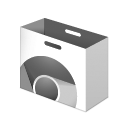

Chrome Web Store Detector
This proof of concept demonstrate how simply any foreign website can find out what apps/extensions presented in your Google Chrome™.
|  | Name | |
| Description | ||
| Category | ||
| Author | ||
| Users | ||
| Icon URL |
How Does It Work
How Does It Work
The method is based on detection of an icon of the extension. If the package extension has an image files, any web site can request them through <img> html tag. So, if the client has successfully loaded icon, it indicates that this extension is installed in web-browser.
Yes, this is simply method based on the white lists. But don't be afraid, when you run packet detection, it does not cause large amount of network request, because we dealing with "chrome-extension://" pseudo-protocol.
In this demo you can check up a maximum of 10,240 most popular extensions (both Apps & Extensions in uniform flow). More is not required for demo, because 80%+ installations accounted for Top 1,000 extensions, and 99%+ installations accounted for Top 10,000 extensions.
Peace of Code
As I said earlier, we need to have the Icon URL, and just need to check whether it is loaded. If so, then the extension is installed. If not, then no. Here is tiny JavaScript function with onLoad/onError event handlers:
- <script type="text/javascript">
- // Detect Angry Birds for Chrome
- WebStoreDetect('aknpkdffaafgjchaibgeefbgmgeghloj/128.png');
- function WebStoreDetect(icon_url) {
- if (window.chrome) {
- var img = new Image();
- img.src = 'chrome-extension://' + icon_url;
- img.onload = function() {
- alert('I love Angry Birds!');
- }
- img.onerror = function() {
- alert('I love my work...');
- }
- }
- else {
- alert('I am not Google Chrome™ user!');
- }
- }
- </script>